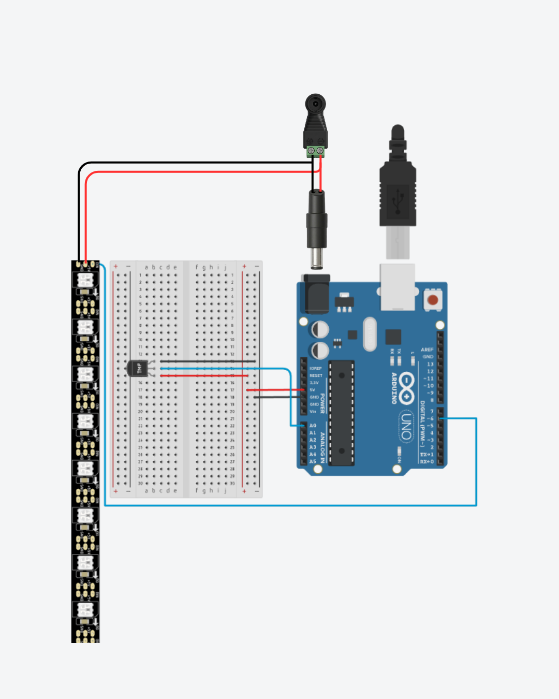

Lámpara
Termo-Color
Una lámpara inteligente que comunica la temperatura ambiente a través del color.
Un Arduino Uno lee el sensor DHT11 y controla una tira de 50 LEDs WS2811 con
FastLED: azul para frío, verde para confort y rojo para calor, con
transiciones suaves usando map().
Simulador Interactivo · Tira WS2811 (50 LEDs)
Temperatura
22°C
Azul · Frío
r=0, g=0, b=255
Diagrama de Circuito

Demo en funcionamiento · YouTube
Project_Termo-Color.ino
Arduino C++ · FastLED
// Supervisado por Jhostin Noh
#include <FastLED.h>
#include <DHT.h>
#define LED_PIN 6
#define NUM_LEDS 50
#define BRIGHTNESS 100
#define LED_TYPE WS2811
#define COLOR_ORDER BRG
CRGB leds[NUM_LEDS];
#define DHTPIN 2
#define DHTTYPE DHT11
DHT dht(DHTPIN, DHTTYPE);
void loop() {
delay(2000);
float t = dht.readTemperature();
if (isnan(t)) { Serial.println("Error sensor"); return; }
int tempInt = (int)t;
int r = 0, g = 0, b = 0;
if (tempInt <= 25) {
b = 255; // Azul puro
} else if (tempInt <= 30) {
g = map(tempInt, 25, 30, 0, 255); // Azul→Verde
b = map(tempInt, 25, 30, 255, 0);
} else if (tempInt <= 35) {
r = map(tempInt, 30, 35, 0, 255); // Verde→Rojo
g = map(tempInt, 30, 35, 255, 0);
} else {
r = 255; // Rojo puro
}
fill_solid(leds, NUM_LEDS, CRGB(r, g, b));
FastLED.show();
}Lista de Materiales · Especificaciones
| Componente | Modelo | Conexión | Valor clave |
|---|---|---|---|
| Microcontrolador | Arduino Uno R3 | USB / DC Jack | 5 V · 16 MHz |
| Sensor temperatura | DHT11 | Pin D2 | 0–50 °C ± 2°C |
| Tira LED | WS2811 · 50 LEDs | Pin D6 (PWM) | BRG · 5 V · 3 A |
| Librería | FastLED | — | Brillo: 100/255 |
| Fuente externa | Adaptador DC | Vin / GND | 5 V · ≥ 3 A |
| Protoboard | 830 puntos | — | Cables jumper M-M |
siguiente proyecto
Calculadora
Multidisciplinaria
Aplicación de terminal con 5 módulos: Física Clásica, Oscilaciones y Ondas, Electromagnetismo, Termodinámica y Convertidor Universal. Cada ecuación permite despejar cualquier variable. La lógica del C++ original corre aquí directamente en el navegador.
›
Ver código fuente completo · Calculadora_Final_v2.cpp ▸
Calculadora_Final_v2.cpp
C++17
#include <iostream>
#include <cmath>
using namespace std;
namespace Constantes {
const double g = 9.81;
const double k_e = 8.98755e9;
const double R = 8.314;
const double PI = 3.14159265359;
}
// --- PROTOTIPOS DE FUNCIONES ---
void menuPrincipal();
void fisicaClasica();
void oscilacionesOndas();
void electromagnetismo();
void termodinamica();
void tablaConversiones();
void pausar();
void limpiarPantalla();
// --- FUNCIÓN PRINCIPAL ---
int main() {
menuPrincipal();
return 0;
}
// --- UTILIDADES ---
void limpiarPantalla() {
#ifdef _WIN32
system("cls");
#else
system("clear");
#endif
}
void pausar() {
cout << "\nPresione Enter para continuar...";
cin.ignore(numeric_limits<streamsize>::max(), '\n');
cin.get();
}
// --- MENÚ PRINCIPAL ---
void menuPrincipal() {
int opcion;
do {
limpiarPantalla();
cout << "==============================================" << endl;
cout << " CALCULADORA MULTIDISCIPLINARIA DE FISICA" << endl;
cout << " Supervisado por JHOSTIN NOH" << endl;
cout << "==============================================" << endl;
cout << "1. Fisica Clasica (Mecanica)" << endl;
cout << "2. Oscilaciones y Ondas" << endl;
cout << "3. Electromagnetismo" << endl;
cout << "4. Termodinamica" << endl;
cout << "5. Tabla de Conversiones" << endl;
cout << "6. Salir" << endl;
cout << "------------------------------------------" << endl;
cout << "Seleccione un area: ";
while (!(cin >> opcion)) {
cout << "Entrada invalida. Ingrese un numero: ";
cin.clear();
cin.ignore(numeric_limits<streamsize>::max(), '\n');
}
switch (opcion) {
case 1: fisicaClasica(); break;
case 2: oscilacionesOndas(); break;
case 3: electromagnetismo(); break;
case 4: termodinamica(); break;
case 5: tablaConversiones(); break;
case 6: cout << "Cerrando sistema..." << endl; break;
default: cout << "Opcion no valida." << endl; pausar(); break;
}
} while (opcion != 6);
}
// --- MÓDULO 1: FÍSICA CLÁSICA (ACTUALIZADO) ---
void fisicaClasica() {
int op, var;
double F, m, a, Ec, v, W, d, P, vf, vi, t, h, theta, rad, Epg;
do {
limpiarPantalla();
cout << "--- FISICA CLASICA ---" << endl;
cout << "1. 2da Ley de Newton (F = m * a)" << endl;
cout << "2. Energia Cinetica (Ec = 0.5 * m * v^2)" << endl;
cout << "3. Trabajo Mecanico Simple (W = F * d)" << endl;
cout << "4. MRUA Velocidad Final (vf = vi + a * t)" << endl;
cout << "5. Peso (P = m * g)" << endl;
// --- NUEVAS OPCIONES ---
cout << "6. Velocidad Media (v = d / t)" << endl;
cout << "7. 3ra Ley de Newton (Accion - Reaccion)" << endl;
cout << "8. MRUA Sin Tiempo (vf^2 = vi^2 + 2*a*d)" << endl;
cout << "9. Energia Potencial Gravitatoria (Ep = m * g * h)" << endl;
cout << "10. Trabajo Mecanico con Angulo (W = F*d*cos(theta))" << endl;
cout << "11. Volver" << endl;
cout << "Seleccione ecuacion: ";
cin >> op;
if (op == 11) return;
cout << "\n--- Ingrese los datos en S.I. ---" << endl;
switch (op) {
case 1: // F = ma
cout << "Despejar: 1.Fuerza(N), 2.Masa(kg), 3.Aceleracion(m/s^2): "; cin >> var;
if (var == 1) { cout << "m: "; cin >> m; cout << "a: "; cin >> a; cout << "F = " << m*a << " N"; }
else if (var == 2) { cout << "F: "; cin >> F; cout << "a: "; cin >> a; if(a!=0) cout << "m = " << F/a << " kg"; else cout << "Error div/0"; }
else if (var == 3) { cout << "F: "; cin >> F; cout << "m: "; cin >> m; if(m!=0) cout << "a = " << F/m << " m/s^2"; else cout << "Error div/0"; }
break;
case 2: // Ec = 0.5 * m * v^2
cout << "Despejar: 1.Energia(J), 2.Masa(kg), 3.Velocidad(m/s): "; cin >> var;
if (var == 1) { cout << "m: "; cin >> m; cout << "v: "; cin >> v; cout << "Ec = " << 0.5*m*pow(v,2) << " J"; }
else if (var == 2) { cout << "Ec: "; cin >> Ec; cout << "v: "; cin >> v; if(v!=0) cout << "m = " << (2*Ec)/pow(v,2) << " kg"; else cout << "Error div/0"; }
else if (var == 3) { cout << "Ec: "; cin >> Ec; cout << "m: "; cin >> m; if(m>0 && Ec>=0) cout << "v = " << sqrt((2*Ec)/m) << " m/s"; else cout << "Error raiz neg/div0"; }
break;
case 3: // W = F * d
cout << "Despejar: 1.Trabajo(J), 2.Fuerza(N), 3.Distancia(m): "; cin >> var;
if (var == 1) { cout << "F: "; cin >> F; cout << "d: "; cin >> d; cout << "W = " << F*d << " J"; }
else if (var == 2) { cout << "W: "; cin >> W; cout << "d: "; cin >> d; if(d!=0) cout << "F = " << W/d << " N"; else cout << "Error div/0"; }
else if (var == 3) { cout << "W: "; cin >> W; cout << "F: "; cin >> F; if(F!=0) cout << "d = " << W/F << " m"; else cout << "Error div/0"; }
break;
case 4: // vf = vi + at
cout << "Despejar: 1.V_final, 2.V_inicial, 3.Aceleracion, 4.Tiempo: "; cin >> var;
if (var == 1) { cout << "vi: "; cin >> vi; cout << "a: "; cin >> a; cout << "t: "; cin >> t; cout << "vf = " << vi + (a*t) << " m/s"; }
else if (var == 2) { cout << "vf: "; cin >> vf; cout << "a: "; cin >> a; cout << "t: "; cin >> t; cout << "vi = " << vf - (a*t) << " m/s"; }
else if (var == 3) { cout << "vf: "; cin >> vf; cout << "vi: "; cin >> vi; cout << "t: "; cin >> t; if(t!=0) cout << "a = " << (vf-vi)/t << " m/s^2"; }
else if (var == 4) { cout << "vf: "; cin >> vf; cout << "vi: "; cin >> vi; cout << "a: "; cin >> a; if(a!=0) cout << "t = " << (vf-vi)/a << " s"; }
break;
case 5: // P = m * g
cout << "Despejar: 1.Peso(N), 2.Masa(kg): "; cin >> var;
if (var == 1) { cout << "m: "; cin >> m; cout << "P = " << m * Constantes::g << " N"; }
else if (var == 2) { cout << "P: "; cin >> P; cout << "m = " << P / Constantes::g << " kg"; }
else cout << "Opcion invalida";
break;
case 6: // Velocidad Media v = d/t
cout << "Despejar: 1.Velocidad(m/s), 2.Distancia(m), 3.Tiempo(s): "; cin >> var;
if (var == 1) { cout << "d: "; cin >> d; cout << "t: "; cin >> t; if(t!=0) cout << "v = " << d/t << " m/s"; else cout << "Error div/0"; }
else if (var == 2) { cout << "v: "; cin >> v; cout << "t: "; cin >> t; cout << "d = " << v*t << " m"; }
else if (var == 3) { cout << "d: "; cin >> d; cout << "v: "; cin >> v; if(v!=0) cout << "t = " << d/v << " s"; else cout << "Error div/0"; }
break;
case 7: // 3ra Ley de Newton
cout << "Principio de Accion y Reaccion." << endl;
cout << "Ingrese magnitud de Fuerza de Accion (N): "; cin >> F;
cout << "Fuerza de Reaccion = " << -F << " N (misma magnitud, sentido opuesto)";
break;
case 8: // vf^2 = vi^2 + 2ad
cout << "Despejar: 1.V_final, 2.V_inicial, 3.Aceleracion, 4.Distancia: "; cin >> var;
if (var == 1) {
cout << "vi: "; cin >> vi; cout << "a: "; cin >> a; cout << "d: "; cin >> d;
double val = pow(vi,2) + 2*a*d;
if(val >= 0) cout << "vf = " << sqrt(val) << " m/s"; else cout << "Error: raiz negativa";
}
else if (var == 2) {
cout << "vf: "; cin >> vf; cout << "a: "; cin >> a; cout << "d: "; cin >> d;
double val = pow(vf,2) - 2*a*d;
if(val >= 0) cout << "vi = " << sqrt(val) << " m/s"; else cout << "Error: raiz negativa";
}
else if (var == 3) {
cout << "vf: "; cin >> vf; cout << "vi: "; cin >> vi; cout << "d: "; cin >> d;
if(d!=0) cout << "a = " << (pow(vf,2) - pow(vi,2))/(2*d) << " m/s^2"; else cout << "Error div/0";
}
else if (var == 4) {
cout << "vf: "; cin >> vf; cout << "vi: "; cin >> vi; cout << "a: "; cin >> a;
if(a!=0) cout << "d = " << (pow(vf,2) - pow(vi,2))/(2*a) << " m"; else cout << "Error div/0";
}
break;
case 9: // Energia Potencial Gravitatoria Ep = mgh
cout << "Despejar: 1.E_Potencial(J), 2.Masa(kg), 3.Altura(m): "; cin >> var;
if (var == 1) { cout << "m: "; cin >> m; cout << "h: "; cin >> h; cout << "Ep = " << m * Constantes::g * h << " J"; }
else if (var == 2) { cout << "Ep: "; cin >> Epg; cout << "h: "; cin >> h; if(h!=0) cout << "m = " << Epg / (Constantes::g * h) << " kg"; }
else if (var == 3) { cout << "Ep: "; cin >> Epg; cout << "m: "; cin >> m; if(m!=0) cout << "h = " << Epg / (m * Constantes::g) << " m"; }
break;
case 10: // Trabajo con Angulo W = F d cos(theta)
cout << "Despejar: 1.Trabajo(J), 2.Fuerza(N), 3.Distancia(m): "; cin >> var;
if (var == 1) {
cout << "F: "; cin >> F; cout << "d: "; cin >> d; cout << "Angulo (grados): "; cin >> theta;
rad = theta * Constantes::PI / 180.0;
cout << "W = " << F * d * cos(rad) << " J";
}
else if (var == 2) {
cout << "W: "; cin >> W; cout << "d: "; cin >> d; cout << "Angulo (grados): "; cin >> theta;
rad = theta * Constantes::PI / 180.0;
if (d!=0 && cos(rad)!=0) cout << "F = " << W / (d * cos(rad)) << " N"; else cout << "Error mat.";
}
else if (var == 3) {
cout << "W: "; cin >> W; cout << "F: "; cin >> F; cout << "Angulo (grados): "; cin >> theta;
rad = theta * Constantes::PI / 180.0;
if (F!=0 && cos(rad)!=0) cout << "d = " << W / (F * cos(rad)) << " m"; else cout << "Error mat.";
}
break;
}
cout << endl;
pausar();
} while (op != 11);
}
// --- MÓDULO 2: OSCILACIONES Y ONDAS ---
void oscilacionesOndas() {
int op, var;
double F, k, x, T, L, f, v, lambda, Ep;
do {
limpiarPantalla();
cout << "--- OSCILACIONES Y ONDAS ---" << endl;
cout << "1. Ley de Hooke (F = -k * x) [Magnitud]" << endl;
cout << "2. Periodo Pendulo Simple (T = 2pi * sqrt(L/g))" << endl;
cout << "3. Relacion Frecuencia-Periodo (f = 1 / T)" << endl;
cout << "4. Velocidad de Onda (v = lambda * f)" << endl;
cout << "5. Energia Potencial Elastica (Ep = 0.5 * k * x^2)" << endl;
cout << "6. Volver" << endl;
cout << "Seleccione ecuacion: ";
cin >> op;
if (op == 6) return;
switch (op) {
case 1: // F = kx (usamos magnitud)
cout << "Despejar: 1.Fuerza(N), 2.Constante(N/m), 3.Deformacion(m): "; cin >> var;
if (var == 1) { cout << "k: "; cin >> k; cout << "x: "; cin >> x; cout << "F = " << k*x << " N"; }
else if (var == 2) { cout << "F: "; cin >> F; cout << "x: "; cin >> x; if(x!=0) cout << "k = " << F/x << " N/m"; }
else if (var == 3) { cout << "F: "; cin >> F; cout << "k: "; cin >> k; if(k!=0) cout << "x = " << F/k << " m"; }
break;
case 2: // T = 2pi * sqrt(L/g)
cout << "Despejar: 1.Periodo(s), 2.Longitud(m): "; cin >> var;
if (var == 1) { cout << "L: "; cin >> L; if(L>=0) cout << "T = " << 2*Constantes::PI*sqrt(L/Constantes::g) << " s"; }
else if (var == 2) { cout << "T: "; cin >> T; if(T>=0) cout << "L = " << pow(T/(2*Constantes::PI), 2) * Constantes::g << " m"; }
break;
case 3: // f = 1/T
cout << "Despejar: 1.Frecuencia(Hz), 2.Periodo(s): "; cin >> var;
if (var == 1) { cout << "T: "; cin >> T; if(T!=0) cout << "f = " << 1.0/T << " Hz"; }
else if (var == 2) { cout << "f: "; cin >> f; if(f!=0) cout << "T = " << 1.0/f << " s"; }
break;
case 4: // v = lambda * f
cout << "Despejar: 1.Velocidad(m/s), 2.Longitud Onda(m), 3.Frecuencia(Hz): "; cin >> var;
if (var == 1) { cout << "lambda: "; cin >> lambda; cout << "f: "; cin >> f; cout << "v = " << lambda*f << " m/s"; }
else if (var == 2) { cout << "v: "; cin >> v; cout << "f: "; cin >> f; if(f!=0) cout << "lambda = " << v/f << " m"; }
else if (var == 3) { cout << "v: "; cin >> v; cout << "lambda: "; cin >> lambda; if(lambda!=0) cout << "f = " << v/lambda << " Hz"; }
break;
case 5: // Ep = 0.5 k x^2
cout << "Despejar: 1.Energia(J), 2.Constante(N/m), 3.Deformacion(m): "; cin >> var;
if (var == 1) { cout << "k: "; cin >> k; cout << "x: "; cin >> x; cout << "Ep = " << 0.5*k*pow(x,2) << " J"; }
else if (var == 2) { cout << "Ep: "; cin >> Ep; cout << "x: "; cin >> x; if(x!=0) cout << "k = " << (2*Ep)/pow(x,2) << " N/m"; }
else if (var == 3) { cout << "Ep: "; cin >> Ep; cout << "k: "; cin >> k; if(k>0 && Ep>=0) cout << "x = " << sqrt((2*Ep)/k) << " m"; }
break;
}
cout << endl;
pausar();
} while (op != 6);
}
// --- MÓDULO 3: ELECTROMAGNETISMO ---
void electromagnetismo() {
int op, var;
double V, I, Res, F, q1, q2, r, P, C, Q, E;
do {
limpiarPantalla();
cout << "--- ELECTROMAGNETISMO ---" << endl;
cout << "1. Ley de Ohm (V = I * R)" << endl;
cout << "2. Ley de Coulomb (F = ke * q1 * q2 / r^2)" << endl;
cout << "3. Potencia Electrica (P = V * I)" << endl;
cout << "4. Capacitancia (C = Q / V)" << endl;
cout << "5. Campo Electrico (E = ke * q / r^2)" << endl;
cout << "6. Volver" << endl;
cout << "Seleccione ecuacion: ";
cin >> op;
if (op == 6) return;
switch(op) {
case 1: // V = I * R
cout << "Despejar: 1.Voltaje(V), 2.Corriente(A), 3.Resistencia(Ohm): "; cin >> var;
if(var==1){ cout<<"I: "; cin>>I; cout<<"R: "; cin>>Res; cout<<"V = "<<I*Res<<" V"; }
else if(var==2){ cout<<"V: "; cin>>V; cout<<"R: "; cin>>Res; if(Res!=0) cout<<"I = "<<V/Res<<" A"; }
else if(var==3){ cout<<"V: "; cin>>V; cout<<"I: "; cin>>I; if(I!=0) cout<<"R = "<<V/I<<" Ohm"; }
break;
case 2: // Coulomb (ke constante)
cout << "Despejar: 1.Fuerza(N), 2.Carga1(C), 3.Distancia(m): "; cin >> var;
if(var==1){ cout<<"q1: "; cin>>q1; cout<<"q2: "; cin>>q2; cout<<"r: "; cin>>r; if(r!=0) cout<<"F = "<<(Constantes::k_e*abs(q1*q2))/pow(r,2)<<" N"; }
else if(var==2){ cout<<"F: "; cin>>F; cout<<"q2: "; cin>>q2; cout<<"r: "; cin>>r; if(q2!=0) cout<<"q1 = "<<(F*pow(r,2))/(Constantes::k_e*q2)<<" C"; }
else if(var==3){ cout<<"F: "; cin>>F; cout<<"q1: "; cin>>q1; cout<<"q2: "; cin>>q2; if(F!=0) cout<<"r = "<<sqrt((Constantes::k_e*abs(q1*q2))/F)<<" m"; }
break;
case 3: // P = V * I
cout << "Despejar: 1.Potencia(W), 2.Voltaje(V), 3.Corriente(A): "; cin >> var;
if(var==1){ cout<<"V: "; cin>>V; cout<<"I: "; cin>>I; cout<<"P = "<<V*I<<" W"; }
else if(var==2){ cout<<"P: "; cin>>P; cout<<"I: "; cin>>I; if(I!=0) cout<<"V = "<<P/I<<" V"; }
else if(var==3){ cout<<"P: "; cin>>P; cout<<"V: "; cin>>V; if(V!=0) cout<<"I = "<<P/V<<" A"; }
break;
case 4: // C = Q / V
cout << "Despejar: 1.Capacitancia(F), 2.Carga(C), 3.Voltaje(V): "; cin >> var;
if(var==1){ cout<<"Q: "; cin>>Q; cout<<"V: "; cin>>V; if(V!=0) cout<<"C = "<<Q/V<<" F"; }
else if(var==2){ cout<<"C: "; cin>>C; cout<<"V: "; cin>>V; cout<<"Q = "<<C*V<<" C"; }
else if(var==3){ cout<<"Q: "; cin>>Q; cout<<"C: "; cin>>C; if(C!=0) cout<<"V = "<<Q/C<<" V"; }
break;
case 5: // E = ke * q / r^2
cout << "Despejar: 1.Campo(N/C), 2.Carga(C), 3.Distancia(m): "; cin >> var;
if(var==1){ cout<<"q: "; cin>>q1; cout<<"r: "; cin>>r; if(r!=0) cout<<"E = "<<(Constantes::k_e*q1)/pow(r,2)<<" N/C"; }
else if(var==2){ cout<<"E: "; cin>>E; cout<<"r: "; cin>>r; cout<<"q = "<<(E*pow(r,2))/Constantes::k_e<<" C"; }
else if(var==3){ cout<<"E: "; cin>>E; cout<<"q: "; cin>>q1; if(E!=0) cout<<"r = "<<sqrt((Constantes::k_e*q1)/E)<<" m"; }
break;
}
cout << endl;
pausar();
} while(op != 6);
}
// --- MÓDULO 4: TERMODINÁMICA ---
void termodinamica() {
int op, var;
double P, V, n, T, m, rho, F, A, Q, c, dT;
do {
limpiarPantalla();
cout << "--- TERMODINAMICA ---" << endl;
cout << "1. Gases Ideales (P*V = n*R*T)" << endl;
cout << "2. Densidad (rho = m / V)" << endl;
cout << "3. Presion (P = F / A)" << endl;
cout << "4. Calor Especifico (Q = m * c * dT)" << endl;
cout << "5. Celsius a Kelvin (K = C + 273.15)" << endl;
cout << "6. Volver" << endl;
cout << "Seleccione ecuacion: ";
cin >> op;
if(op == 6) return;
switch(op) {
case 1: // PV = nRT (R constante)
cout << "Despejar: 1.Presion(Pa), 2.Volumen(m3), 3.Moles(n), 4.Temp(K): "; cin >> var;
if(var==1) { cout<<"V: "; cin>>V; cout<<"n: "; cin>>n; cout<<"T: "; cin>>T; if(V!=0) cout<<"P = "<<(n*Constantes::R*T)/V<<" Pa"; }
else if(var==2) { cout<<"P: "; cin>>P; cout<<"n: "; cin>>n; cout<<"T: "; cin>>T; if(P!=0) cout<<"V = "<<(n*Constantes::R*T)/P<<" m3"; }
else if(var==3) { cout<<"P: "; cin>>P; cout<<"V: "; cin>>V; cout<<"T: "; cin>>T; if(T!=0) cout<<"n = "<<(P*V)/(Constantes::R*T)<<" mol"; }
else if(var==4) { cout<<"P: "; cin>>P; cout<<"V: "; cin>>V; cout<<"n: "; cin>>n; if(n!=0) cout<<"T = "<<(P*V)/(n*Constantes::R)<<" K"; }
break;
case 2: // rho = m / V
cout << "Despejar: 1.Densidad(kg/m3), 2.Masa(kg), 3.Volumen(m3): "; cin >> var;
if(var==1) { cout<<"m: "; cin>>m; cout<<"V: "; cin>>V; if(V!=0) cout<<"Densidad = "<<m/V<<" kg/m3"; }
else if(var==2) { cout<<"Densidad: "; cin>>rho; cout<<"V: "; cin>>V; cout<<"Masa = "<<rho*V<<" kg"; }
else if(var==3) { cout<<"Densidad: "; cin>>rho; cout<<"m: "; cin>>m; if(rho!=0) cout<<"Volumen = "<<m/rho<<" m3"; }
break;
case 3: // P = F / A
cout << "Despejar: 1.Presion(Pa), 2.Fuerza(N), 3.Area(m2): "; cin >> var;
if(var==1) { cout<<"F: "; cin>>F; cout<<"A: "; cin>>A; if(A!=0) cout<<"P = "<<F/A<<" Pa"; }
else if(var==2) { cout<<"P: "; cin>>P; cout<<"A: "; cin>>A; cout<<"F = "<<P*A<<" N"; }
else if(var==3) { cout<<"P: "; cin>>P; cout<<"F: "; cin>>F; if(P!=0) cout<<"A = "<<F/P<<" m2"; }
break;
case 4: // Q = m * c * dT
cout << "Despejar: 1.Calor(J), 2.Masa(kg), 3.Calor Esp(J/kgK), 4.Delta T(K): "; cin >> var;
if(var==1) { cout<<"m: "; cin>>m; cout<<"c: "; cin>>c; cout<<"dT: "; cin>>dT; cout<<"Q = "<<m*c*dT<<" J"; }
else if(var==2) { cout<<"Q: "; cin>>Q; cout<<"c: "; cin>>c; cout<<"dT: "; cin>>dT; if(c*dT!=0) cout<<"m = "<<Q/(c*dT)<<" kg"; }
break;
case 5: // K = C + 273.15
cout << "1. Celsius a Kelvin, 2. Kelvin a Celsius: "; cin >> var;
if(var==1) { cout<<"C: "; cin>>T; cout<<"K = "<<T + 273.15; }
else { cout<<"K: "; cin>>T; cout<<"C = "<<T - 273.15; }
break;
}
cout << endl;
pausar();
} while(op != 6);
}
// --- MÓDULO 5: CONVERSIONES INTEGRAL ---
void tablaConversiones() {
int cat, op;
double val;
do {
limpiarPantalla();
cout << "--- CONVERTIDOR DE UNIDADES UNIVERSAL ---" << endl;
cout << "Seleccione la magnitud a convertir:" << endl;
cout << "1. Longitud (Metros, Pies, Pulgadas, Millas)" << endl;
cout << "2. Masa (Kilogramos, Libras, Onzas)" << endl;
cout << "3. Velocidad (m/s, km/h, mph)" << endl;
cout << "4. Fuerza (Newtons, Libras-fuerza)" << endl;
cout << "5. Energia y Trabajo (Joules, Calorias, BTU)" << endl;
cout << "6. Potencia (Watts, Caballos de fuerza HP)" << endl;
cout << "7. Presion (Pascales, ATM, PSI, mmHg)" << endl;
cout << "8. Temperatura (Celsius, Fahrenheit, Kelvin)" << endl;
cout << "9. Volumen (Litros, Galones, m3)" << endl;
cout << "10. Angulos (Grados, Radianes)" << endl;
cout << "11. Volver al Menu Principal" << endl;
cout << "Seleccione: ";
cin >> cat;
if (cat == 11) return;
limpiarPantalla();
switch (cat) {
case 1: // Longitud
cout << "--- LONGITUD ---" << endl;
cout << "1. Metros a Pies (ft)" << endl;
cout << "2. Pies a Metros" << endl;
cout << "3. Metros a Pulgadas (in)" << endl;
cout << "4. Kilometros a Millas" << endl;
cin >> op;
cout << "Ingrese valor: "; cin >> val;
if(op==1) cout << val << " m = " << val * 3.28084 << " ft";
else if(op==2) cout << val << " ft = " << val / 3.28084 << " m";
else if(op==3) cout << val << " m = " << val * 39.3701 << " in";
else if(op==4) cout << val << " km = " << val * 0.621371 << " mi";
break;
case 2: // Masa
cout << "--- MASA ---" << endl;
cout << "1. Kilogramos a Libras (lb)" << endl;
cout << "2. Libras a Kilogramos" << endl;
cout << "3. Kilogramos a Onzas (oz)" << endl;
cout << "4. Gramos a Onzas" << endl;
cin >> op;
cout << "Ingrese valor: "; cin >> val;
if(op==1) cout << val << " kg = " << val * 2.20462 << " lb";
else if(op==2) cout << val << " lb = " << val / 2.20462 << " kg";
else if(op==3) cout << val << " kg = " << val * 35.274 << " oz";
else if(op==4) cout << val << " g = " << val * 0.035274 << " oz";
break;
case 3: // Velocidad
cout << "--- VELOCIDAD ---" << endl;
cout << "1. m/s a km/h" << endl;
cout << "2. km/h a m/s" << endl;
cout << "3. m/s a Millas por hora (mph)" << endl;
cout << "4. km/h a Millas por hora (mph)" << endl;
cin >> op;
cout << "Ingrese valor: "; cin >> val;
if(op==1) cout << val << " m/s = " << val * 3.6 << " km/h";
else if(op==2) cout << val << " km/h = " << val / 3.6 << " m/s";
else if(op==3) cout << val << " m/s = " << val * 2.23694 << " mph";
else if(op==4) cout << val << " km/h = " << val * 0.621371 << " mph";
break;
case 4: // Fuerza
cout << "--- FUERZA ---" << endl;
cout << "1. Newtons a Libras-fuerza (lbf)" << endl;
cout << "2. Libras-fuerza a Newtons" << endl;
cout << "3. Newtons a Dinas" << endl;
cin >> op;
cout << "Ingrese valor: "; cin >> val;
if(op==1) cout << val << " N = " << val * 0.224809 << " lbf";
else if(op==2) cout << val << " lbf = " << val / 0.224809 << " N";
else if(op==3) cout << val << " N = " << val * 100000 << " dinas";
break;
case 5: // Energía
cout << "--- ENERGIA ---" << endl;
cout << "1. Joules a Calorias (cal)" << endl;
cout << "2. Calorias a Joules" << endl;
cout << "3. Joules a BTU" << endl;
cout << "4. Joules a kW-hora (kWh)" << endl;
cin >> op;
cout << "Ingrese valor: "; cin >> val;
if(op==1) cout << val << " J = " << val * 0.239006 << " cal";
else if(op==2) cout << val << " cal = " << val / 0.239006 << " J";
else if(op==3) cout << val << " J = " << val * 0.000947817 << " BTU";
else if(op==4) cout << val << " J = " << val / 3.6e6 << " kWh";
break;
case 6: // Potencia
cout << "--- POTENCIA ---" << endl;
cout << "1. Watts a Caballos de Fuerza (HP - Mecanico)" << endl;
cout << "2. Caballos de Fuerza (HP) a Watts" << endl;
cin >> op;
cout << "Ingrese valor: "; cin >> val;
if(op==1) cout << val << " W = " << val * 0.00134102 << " HP";
else if(op==2) cout << val << " HP = " << val / 0.00134102 << " W";
break;
case 7: // Presión
cout << "--- PRESION ---" << endl;
cout << "1. Pascales a Atmosferas (atm)" << endl;
cout << "2. Atmosferas a Pascales" << endl;
cout << "3. Pascales a PSI (lb/in^2)" << endl;
cout << "4. Atmosferas a mmHg" << endl;
cin >> op;
cout << "Ingrese valor: "; cin >> val;
if(op==1) cout << val << " Pa = " << val / 101325.0 << " atm";
else if(op==2) cout << val << " atm = " << val * 101325.0 << " Pa";
else if(op==3) cout << val << " Pa = " << val * 0.000145038 << " PSI";
else if(op==4) cout << val << " atm = " << val * 760.0 << " mmHg";
break;
case 8: // Temperatura
cout << "--- TEMPERATURA ---" << endl;
cout << "1. Celsius a Fahrenheit" << endl;
cout << "2. Fahrenheit a Celsius" << endl;
cout << "3. Celsius a Kelvin" << endl;
cout << "4. Kelvin a Celsius" << endl;
cin >> op;
cout << "Ingrese valor: "; cin >> val;
if(op==1) cout << val << " C = " << (val * 9.0/5.0) + 32.0 << " F";
else if(op==2) cout << val << " F = " << (val - 32.0) * 5.0/9.0 << " C";
else if(op==3) cout << val << " C = " << val + 273.15 << " K";
else if(op==4) cout << val << " K = " << val - 273.15 << " C";
break;
case 9: // Volumen
cout << "--- VOLUMEN ---" << endl;
cout << "1. Litros a Galones (US)" << endl;
cout << "2. Galones (US) a Litros" << endl;
cout << "3. Metros cubicos a Litros" << endl;
cin >> op;
cout << "Ingrese valor: "; cin >> val;
if(op==1) cout << val << " L = " << val * 0.264172 << " gal";
else if(op==2) cout << val << " gal = " << val / 0.264172 << " L";
else if(op==3) cout << val << " m3 = " << val * 1000.0 << " L";
break;
case 10: // Ángulos
cout << "--- ANGULOS ---" << endl;
cout << "1. Grados a Radianes" << endl;
cout << "2. Radianes a Grados" << endl;
cin >> op;
cout << "Ingrese valor: "; cin >> val;
if(op==1) cout << val << " deg = " << val * (Constantes::PI / 180.0) << " rad";
else if(op==2) cout << val << " rad = " << val * (180.0 / Constantes::PI) << " deg";
break;
default:
cout << "Opcion no valida." << endl;
}
cout << endl;
pausar();
} while (cat != 11);
}